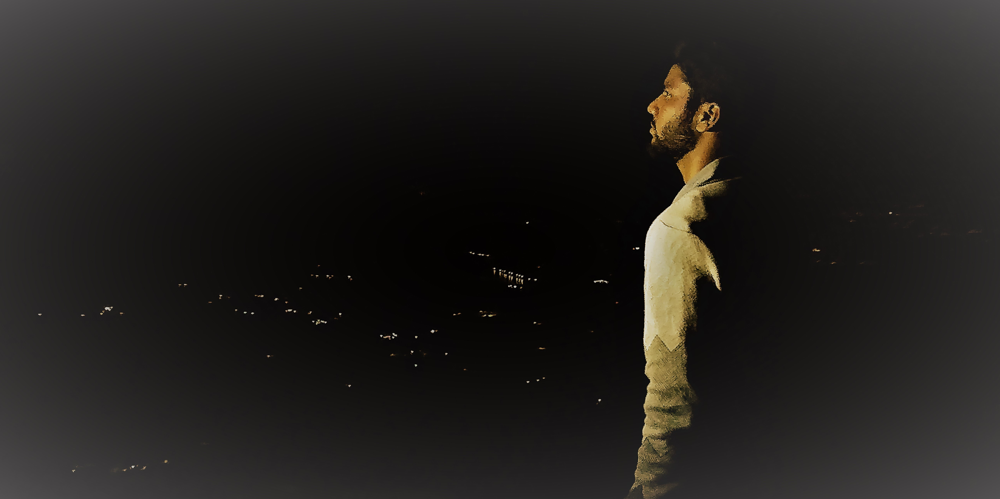

This is Abhijeet Nag. I am from Dhanbad and I have completed my schooling there too. Completed my B.Tech in Computer Science and Engineering from Academy of Technology which is situated at West Bengal and is affiliated to MAKAUT. Now I am an IT Professional currently working in Tata Consultancy Services which is One of the India's largerst IT company. Playing Basketball, Cricket, Volleyball and orgainsing different kind of events are my hobbies.

Technologies :
Mongo DB(Database System), Express (Back end web framework), Angular.js(front-end framework), Node.js(back-end runtime environment)
Java, J2EE, JDBC, Servlet.
Also have an interest in Machine Learning (R and Python).

Work Experience: 24 Months.
Trained on Java during Initial Learning Programming.
Exposure to Core Java, JDBC, JSP, Servlet, Javascript.
Followed MVC pattern for development of Web Application.
Database: Exposure to Oracle 11g.
Web Server: Apache Tomcat.
Methodology: Agile.
Tool used: Eclipse Indigo.
B.Tech Final Year Project: Determine the no. of cluster in an image automatically.
Web Development using Advance Java during 30 days training in Globsyns Skill Development(P) Ltd.
Developed website for a bank during ILP in TCS.
Currently working on Big Healthcare Project which uses JAVA.
Developed my responsive portfolio as a part of assignment for design basics in edWisor.